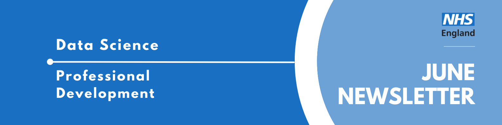

Professional Development Newsletter June 2024

Welcome to the latest Professional Development newsletter, brought to you by the Data Science skilled team Professional Development Functional Team.
The newsletter team are always happy to receive constructive feedback, and we invite you to send us any contributions you may have.
There are some legacy NHS Digital items which we have identified with❗
If you cannot access something of interest to you, please reach out.
Thanks for reading! – PD newsletter team
Highlights
National Competency Framework Tool
The Professional Development Function Team want to promote the National Competency Framework Tool to help shape your objectives for the year ahead.
You can use this tool in any way you like:
- Do a full self-assessment to build a personal profile of yourself, marking areas where you want to target your development and understanding where you measure up against job bands.
- Review areas where you are interested in developing; we recommend checking out the additional modules of the framework covering:
- Specialised technical skills that you may have developed in a unique role within a team, like Data Visualisation, Machine Learning, or Data Automation.
- Broader professional skill areas such as Behaviours, Leadership and Management, and Working in Team that apply across roles regardless of background.
- See where you stand for other job areas like Data Analysis and Data Engineering.
While this framework is still in the early stages of adoption, feedback is key to help the Professional Development Function Team and the National Competency Framework team develop more resources. Let us know if and how you are using the tool, or any other ways we can help you use the National Competency Framework through this form
Masters in Research (MRes) in Data Science & Analytics for Health
Applications now open for this funded course -the short application form can be found here. For more information, please see this FAQ document. This is a fantastic opportunity for those who want to deepen their expertise in data science and analytics, with a specific focus on a health data research project. The syllabus will include campus-based or remote lectures and practical-based training in:
- Machine learning
- Artificial Intelligence
- Programming for Data Science
- Data Science & Analytics for Causal Inference and Prediction
A workplace-based research project, undertaken within NHS England, supported by the NHS England Data Science Team. A Masters course is a significant personal investment of time, a day a week will be allocated to attend university and it is anticipated that there will be three to six hours per week worth of additional study. Potential applicants should consider this before applying. It is also a substantial investment from NHS England and will therefore be subject to a rigorous, fair and transparent selection process.
Applications will close August 4th, and the course is due to start in October. If you have any questions, please get in touch with Sarah Culkin or Rupert Chaplin.
Events
Lots of exciting things coming up! See the full calendar here❗
Data and AI Ethics Community meeting: Ethical Considerations in Data Linkage with Splink
Tuesday 2nd July 13:00-14:00, Teams
Splink is a Ministry of Justices open-source software which uses unsupervised machine learning to link together millions of data records belonging to justice system users. This talk will cover the many and varied ethical considerations of performing data linkage with Splink, how we address these within our work and improvements we are planning for the future. The Data Linkage Hub at NHSE is exploring the use of Splink as a probabilistic data linkage tool. Reach out if you want to know more and familiarize yourself with our pipeline.
Linking Analysts In Leeds
Thursday 4th July 13:00-14:30, BEC Ground Floor 7&8 Wellington Place and Teams
Linking Analysts In Leeds is an opportunity for analysts working in different civil service departments in Wellington Place in Leeds to meet-up, make links, and share learning.
This session will involves speakers from DataCamp running a session showcasing DataCamp and the extensive training resources it offers.
If you wish to join the meeting please complete the following form (this covers in person and online): Linking Analysts In Leeds - July
London Data Week 2024
1st-7th July 2024, Online and in person
London Data Week is a city-wide, distributed festival of events focusing on all things data. Data is a major part of our everyday lives, and shapes many of the decisions we make – as well as the decisions that are made about us – whether we know it or not. We believe that everyone should have a seat at the table when it comes to data, and that is the guiding principle behind our core values: to be collaborative, open and inclusive. So, we invite you to be part of the conversation by joining us and our event partners at a London Data Week event.
Find out more about London Data Week and what events are being held here
Health and Care Analytics Conference 2024
23rd-24th July 2024, Telford International Centre
The HACA conference is a celebration of the great work of health and care analysts bringing together analysts and leaders and decision makers to showcase how analysts can help leaders make high quality decisions.
The programme is now published - check out what events and talks you might be interested in! Beforehand, have a look at some of their E-Labs, running 8th-10th July.
NHS RPySOC 2024 Conference - registration opened
Thursday 21st-22nd November, 9am-5pm, in-person (Birmingham) / Online
The NHS RPySOC 2024 conference is open for registration now! It will be on 21st & 22nd November in Birmingham. This is jointed hosted by the NHS R Community and NHS.pycom, and also promotes Open Source.
- Day 1 will be a mixture of presentations, workshops and lightening talks
- Day 2 (in-person only) will be ‘Unconference’ with suggestions for topics being taken on day 1.
It’s a great chance to show off our work, share our learning with a like minded community and learn a few things yourself, such as the state of the industry and how techniques are being applied elsewhere.
You can either attend:
See more future events on our confluence calendar❗ Know of any events we should feature next month? Let us know by clicking the “Contribute” button, or here.
Interview with a Data Scientist
Mia Noonan is a Senior Data Scientist in the NHS England Data Science team, who first joined the company as a member of the 2021 graduate cohort.
Thank you for agreeing to be the first “Interview with a Data Scientist” for the PD newsletter! I was wondering, could you tell me a bit about your background and what motivated you to pursue a career in data science in the NHS?
M: I did economics and politics at Uni, but after a year in finance thought this isn’t for me as I didn’t really gel with the sort of work that I was doing at the time. In contrast, I found myself really interested by the work that the IT department was doing because I could see the impact that it had on my day-to-day. For example, there was one task where I had to process a load of invoices and that would take me all afternoon and then one day they just went, “Oh yeah, we’ve automated that” and I was like “what?!” – and immediately wanted to be on the side which was doing that!
So that was one of my main motivations to go into computer science, and I decided to do a computer science Master’s at Bath. It was quite an intense year, but it gave me the upskilling that I needed to go into more technical roles. I got introduced to data science right at the end of that year from my final research project. It was an NLP project where I had to analyse the transcription of everything that’s said in parliament, to understand where MPs are focusing their attention. I really enjoyed it because it was a bridge between economics, politics and computer science.
Once I did that project I thought, yeah, this is this is super cool, this is exactly where I want to be. Someone I was speaking to mentioned that there was a data science team in the NHS and I was like wow, I didn’t know - but immediately wanted to be a part of it! I was lucky enough to get a placement in the data science team through the NHS Digital graduate scheme, and the rest is history…!
What specific professional development tools or resources did you find most helpful in skilling up on your time of the graduate scheme?
M: I had Kin as a line manager, so that was great. He was very, very good at articulating SMART goals, and I think that really helped because the goals were so well laid out, a lot of the competencies I could just tick off on the job due to the variety of work in the data linkage enhancement team. I was lucky with my placement, my line manager, and had a lot of the things I could just do on the job, which was great.
In terms of technical skills, Pluralsight would be my bread and butter in terms of a tool and a resource to turn to just to upskill. If I’m like “oh, I don’t know what an S3 bucket is, I need to do some AWS training”, if there’s a specific technical skill I need to learn, I’d go to that.
I think I find that I probably sometimes upskill a little bit easier when I’m doing something on the job and practically applying it straight away. I really try and actively seek out the opportunities to go and upskill in other areas. I try not to be passive about my development goals and seek out the opportunities, and if there’s something that interests me, follow up on it.
What keeps you motivated and passionate about your work and data science with the NHS?
M: It’s really exciting just being able to continuously learn new things and be on the forefront of new disruptive technologies. I like the fact that the work we’re doing is making a real difference to the NHS, it’s great.
Being surrounded by such great team members also makes a big difference. The team has got so much knowledge inside of it that it’s easy to organically learn things from people. It’s a positive learning environment and has a culture of safety and openness, there’s no one in the team I would feel hesitant going to ask a question to.
And then also having that culture of wanting everyone to do well, makes you want to do well because you want to contribute back and create that positive cycle for the whole team and feel like you’re contributing towards that.
The current graduates will be embarking on their End of Scheme in the next fortnight or so. What is a piece of advice that you have for them?
M: In terms of something that’s relevant to this point in terms of their career and passing their End of Scheme I would say that my biggest piece of advice would be don’t stop being curious about things. They’ve had a really intense upskilling period where they’ve gone through two years of intense rotations, being exposed to those different areas, but don’t stop that momentum just because you’ve rolled off the scheme. Go out, speak to loads of different teams, different people, keep networking. Keep trying different projects, different things because you’ll learn more and more about what interests and motivates you, because two years sounds like a long time, but it’s really short.
This interview was edited for brevity
Training Opportunities
NHS England and Microsoft - Digital Accessibility Fundamentals Training
NHS England have teamed up with Microsoft to put some training together on Accessibility Fundamentals. For more information and details on how to sign up for the training, check out the post on the NHS England Hub.
There has also been added information for the event onto the Accessibility Hub!❗
Microsoft Learn for GitHub
Check out the GitHub training available on Microsoft Learn, modules available include:
- Introduction to Git
- Learn continuous integration with GitHub Actions
- Manage sensitive data and security policies within GitHub
- Create and publish custom GitHub actions
Check out all the resources in the Training Brochure! Can you spot something missing? Contact us!